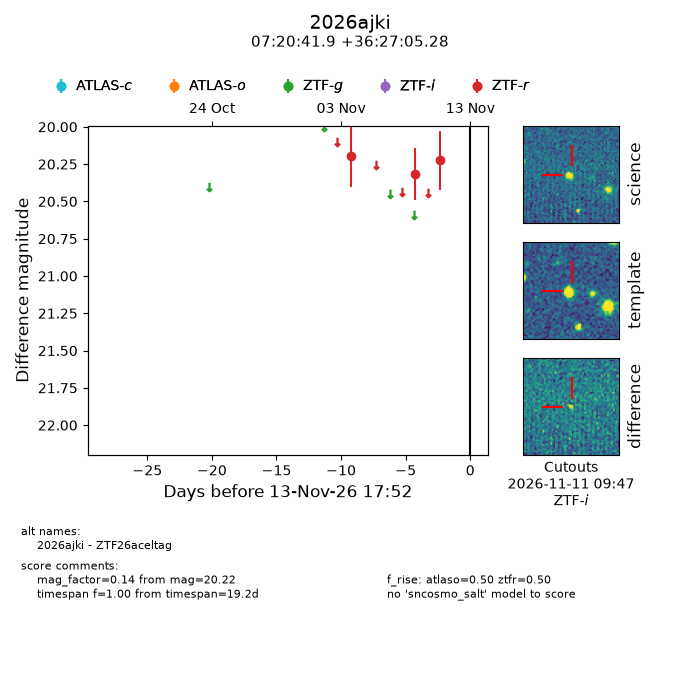
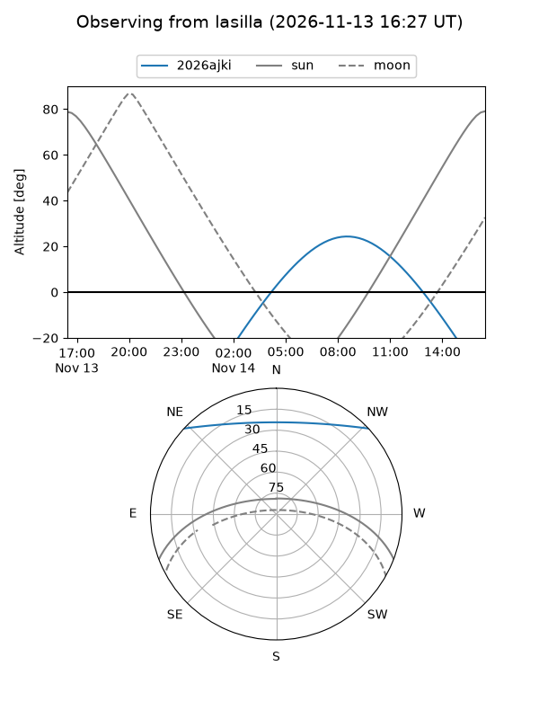
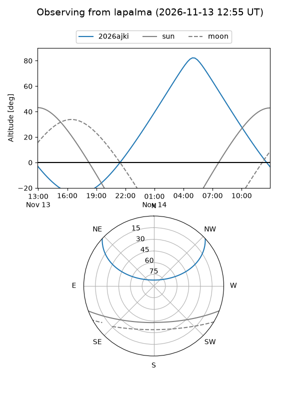
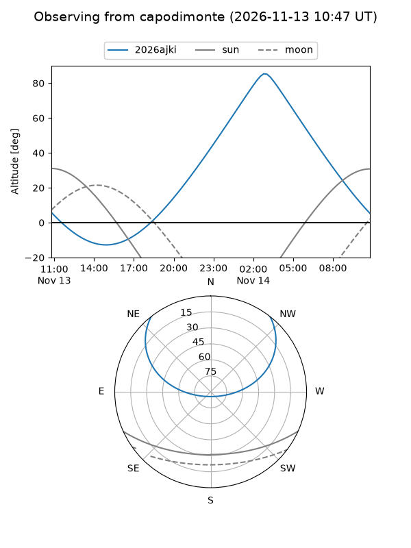
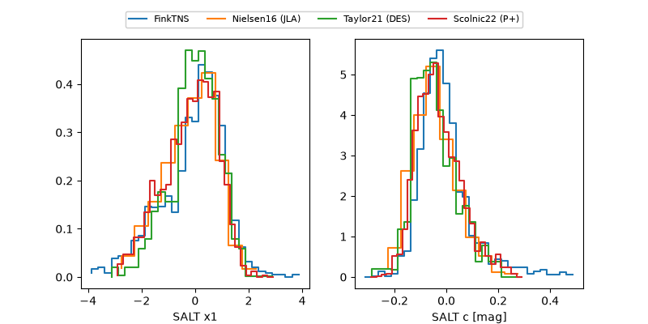

2026ajki
Target 2026ajki at 2026-11-13 17:58
Aliases and brokers:
FINK-ZTF: ztf.fink-portal.org/ZTF26aceltag
Lasair-ZTF: lasair-ztf.lsst.ac.uk/objects/ZTF26aceltag
ALeRCE-ZTF: alerce.online/object/ZTF26aceltag
YSE-PZ: ziggy.ucolick.org/yse/transient_detail/2026ajki
TNS name: wis-tns.org/object/2026ajki
Direct TNS query: direct search
alt names
ZTF26aceltag (ztf,fink_ztf)
2026ajki (tns,yse)
Coordinates:
equatorial (ra, dec) = 110.1744,+36.45147
equatorial (HMS+DMS) = 07:20:41.86,+36:27:05.28
galactic (l, b) = (181.7894,+21.22713)
Flags:
peak dt:
Photometry:
last atlaso=nan, ztfr=20.22
1 atlaso, 3 ztfr detections
Lightcurve

Visibility



Additional plots
